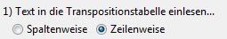
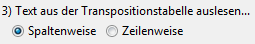
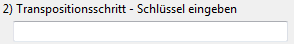

Diese Seite erklärt die Bedienung der Oberfläche der Transpositionsverschlüsselung. Weitere Informationen zum Transpositions-Verfahren selbst stehen auf der Unterseite Transpositions-Verschlüsselung.
Im Folgenden werden die Optionengruppen des Assistenten vorgestellt. Bei der Transpositions-Verschlüsselung muss meist nur den Gruppierungen "Operation" und "Schlüssel" Beachtung geschenkt werden.
Diese Implementierung der Transpositions-Verschlüsselung ermöglicht, den Text ein- oder zweimal zu transponieren (einfache und doppelte Spaltentransposition). Die doppelte Spaltentransposition wird über eine Checkbox aktiviert.
Zuerst sollte ausgewählt werden, ob der Text verschlüsselt oder entschlüsselt werden soll. Da die Transpositionsverschlüsselung symmetrisch ist, endet die Verschlüsselung und danach ausgeführte Entschlüsselung eines Textes mit ein und demselben Schlüssel wieder im Originaltext.
Die Transpositionsverschlüsselung vertauscht die Reihenfolge der Zeichen, und ist an kein Alphabet gebunden.
Es besteht die Möglichkeit, vor der Verschlüsselung noch häufig nützliche Text-Transformationen durchzuführen. Dazu zählen zum Beispiel die Entfernung von Zeilenumbrüchen, Leerzeichen, oder die Umwandlung in Groß- oder Kleinschreibung. Je nach Umständen kann eine solche Umformung auch die Sicherheit des Geheimtextes verbessern.
Die Text-Transformation ist in den allermeisten Fällen nur bei der Verschlüsselung hilfreich! Bei der Entschlüsselung führt sie meist zur Sinnentstellung des Textes.
Wie bereits erwähnt, können zwei Transpositionsschritte hintereinander ausgeführt werden. Sie können also entscheiden, ob Sie eine einfache, oder eine doppelte Spaltentransposition ausführen wollen. Jeder Schritt erfordert folgende Parameter:
Einleserichtung und Ausleserichtung:

Die Transpositionsverschlüsselung trägt den Text in eine "Transpositionstabelle" ein und vertauscht die Spalten der Tabellen im Verschlüsselungsschritt. Festgelegt werden muss nun auch, in welcher Art und Weise der Klartext in die Tabelle eingelesen wird, und wie der Tabelleninhalt nach der Verschlüsselung wieder in einen fließenden Text umgewandelt wird. Dies kann entweder zeilenweise geschehen, d. h. der Text wird zeilenweise in die Tabelle geschrieben, bzw. zeilenweise daraus ausgelesen und hintereinandergeschrieben, oder spaltenweise. Eine genaue Erklärung bietet die Unterseite Transpositions-Verschlüsselung.
Transpositionsschlüssel:

Der Transpositionsschlüssel kann aus beliebigen Zeichen des Alphabets bestehen. Je länger der Schlüssel, desto besser werden in der Regel die Spalten der Transpositionstabelle "durchgemischt".
Wichtig ist, dass bei der Entschlüsselung eines Geheimtextes nicht nur die Schlüsseleingabe identisch zur Schlüsseleingabe bei der Erzeugung des verschlüsselten Textes sein muss – auch die Ein-/ Ausleserichtung muss übereinstimmen. Man könnte auch (richtigerweise) annehmen, dass die Ein-/ Ausleserichtungen beim Entschlüsseln genau spiegelverkehrt zu den Einstellungen bei der Verschlüsselung sein müssen, jedoch wird dies automatisch erledigt. Merke: Beim Entschlüsseln dieselben Eingaben wie bei der Verschlüsselung machen.
Nachdem alles ausgefüllt ist, kann der Assistent beendet, und der Text ver-/entschlüsselt werden. Der neue Text wird dann in einem neu geöffneten Editorfenster angezeigt.